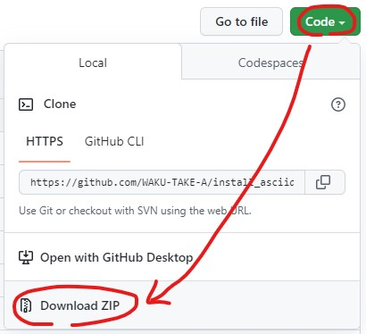
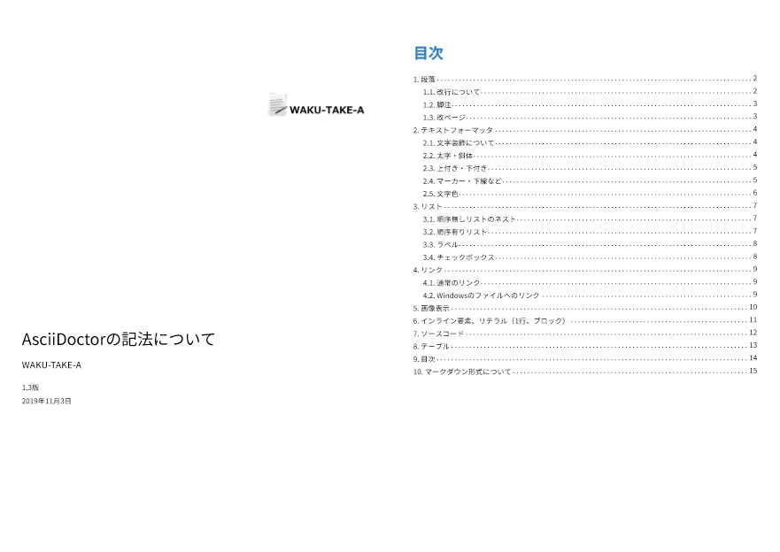

asciidoctor-pdfによるPDF出力(導入)、asciidoctor-pdfによるPDF出力(フォント)、asciidoctor-pdfによるPDF出力(文字色)で、
「asciidoctor-pdf」の導入手順を述べましたが、結構手間がかかります。
インストーラ的なものを作ってみました。少しは楽になるかもしれません。
x64ビットWindows用です。
インストール手順
こちらの右上の[Code]ボタン ⇒ [Download ZIP]ボタンをクリックしてダウンロードしてください。

図1. ZIPファイルのダウンロード方法
ZIPファイルを展開します。インストール用ファイル群が作成されます。
（フォルダ名などに「,」などの記号が入らないようにしてください）
こちらからRubyのX64ビット用のインストーラをダウンロードします。(+Devkitじゃない方でOK)
batファイルや RunMultipleBatFiles.exe のあるフォルダにRubyのインストーラをコピーします。
すでにインストールされているRubyはアンインストールし、残ったフォルダは必ず削除してください。
RunMultipleBatFiles.exe を管理者権限で実行します。
（ RunMultipleBatFiles.exe は複数のバッチファイル、DOSコマンドを実行するアプリケーションです。）
PROXYの設定を行う時は、Variablesに「HTTP_PROXY」と「HTTPS_PROXY」を、Valuesに
http://プロキシのアドレス:ポート番号を記入してください。http://を付け忘れないでください。また、http://user:password@・・・とするとエラーになるようです。
[Run]をクリックします。最初、画像が2枚表示されます。閉じるとインストールが実行されます。
インストール後は、動作の確認をするために、 こちらをダウンロードして、「convert_pdf.bat」を実行してみてください。正常にPDFが作成されればOKです。

図2. 動作の確認
ポイント
RunMultipleBatFiles.exe で以下を順番に実行しています。
Install_Ruby_x64.bat- ・最初に画像が表示されるくらいであまり意味はありません。Rubyのインストーラーを直接実行してもかまいません。
gem environment gemdir > gemdir.txt- ・モジュールのインストール先を調べ、gemdir.txt に保存します。
bundle install- ・フォルダ内の「Gemfile」で必要なモジュールのインストールを実行します。
ruby Download_Fonts.rb- ・フォントのダウンロードをするスクリプト「Download_Fonts.rb」を実行します。
- ・「gem environment gemdir > gemdir.txt」の後に実行してください。
- 「懐源ゴシック」／「源様明朝」／「Ricty Diminished」の日本語フォントを「asciidoctor-pdf」のフォント フォルダにダウンロードします。
- 「\lib\ruby\gems\[Rubyのバージョン番号]\gems\asciidoctor-pdf-[バージョン番号]\data\fonts」にダウンロードされますので、正常に動作しない時には確認してください。
- 最新の「源様明朝」はTTCファイルになっていました。過去のバージョンを使います。